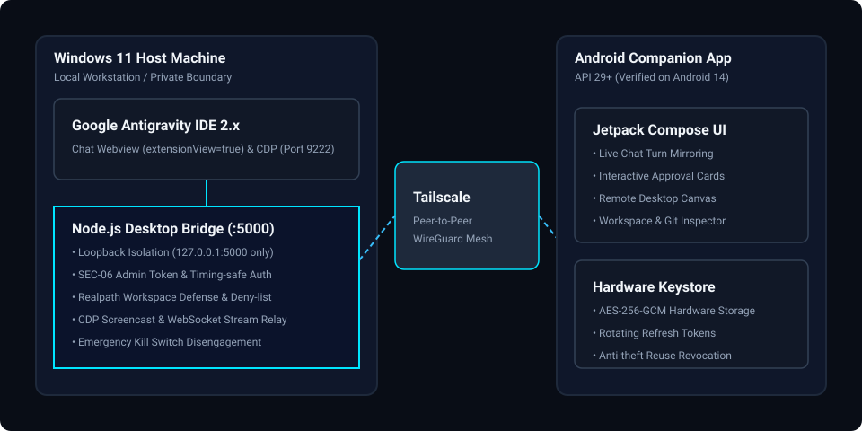
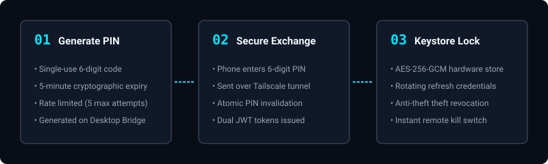

Architecture & Protocol Design
A transparent look at how Antigravity Mobile IDE connects to your IDE, extracts chat turns, mirrors your screen, and keeps your workstation safe.

1. Antigravity 2.x Integration via CDP
Google Antigravity IDE 2.x is built on modern webview architecture, isolating the conversational agent interface into an internal iframe (extensionView=true) rather than exposing it directly in the top-level Electron DOM.
The Node.js bridge connects to the IDE over Chrome DevTools Protocol (CDP port 9222) and automatically resolves active webview targets using DevToolsActivePort. It extracts conversational prose, tool call collapsible groups, and interactive permission prompts without requiring any modified binary or proprietary plugins.
2. Screen Mirroring: CDP Screencast vs Native Helper
To ensure maximum compatibility without demanding gigabytes of native C++ toolchains, screen streaming operates on a dual-engine model:
Primary Engine: CDP Screencast
Managed directly by the Node.js bridge using Page.startScreencast. Delivers 25–30 FPS compressed JPEG frames tagged with 0x4A headers over WebSocket. Requires zero compilers or native dependencies.
Optional Accelerator: Native Rust Helper
A native Windows background helper (rust-helper/) utilizing DXGI Desktop Duplication and low-level enigo input injection. Links over loopback using an environment-isolated 32-byte secret handshake when MSVC Build Tools are present.
3. Pairing & Key Exchange Lifecycle
All communication between phone and PC is authenticated via hardware-backed cryptographic credentials:
